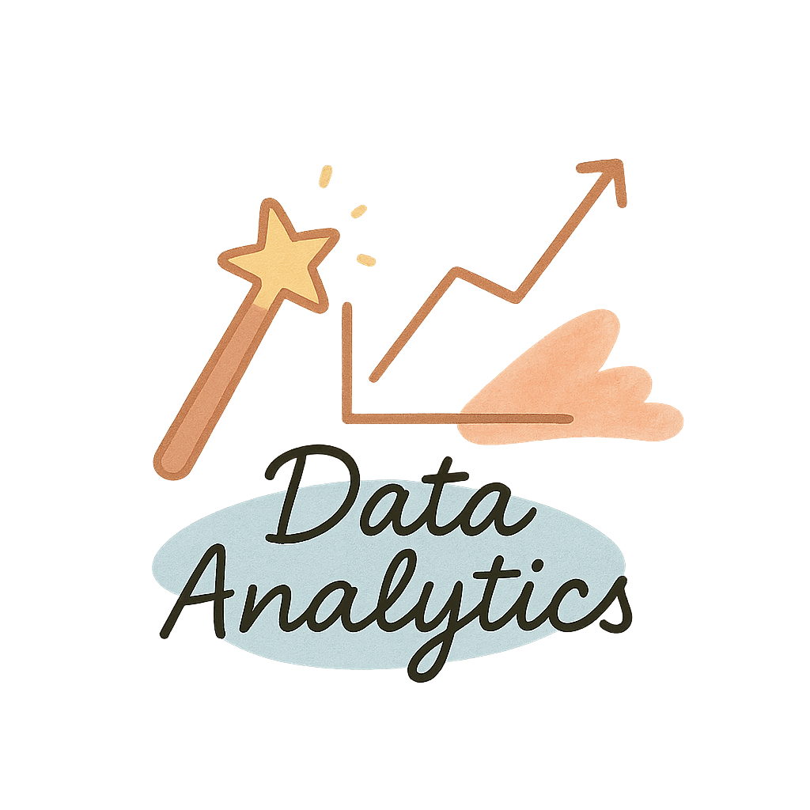

Hi, I'm _
UX Research
Understanding user emotions and behaviors through interviews, workshops and usability testing.

Data Analytics
Analyzing data patterns, exploring trends and user behaviors to support data-driven decision-making.
Automations
Reducing manual effort and human error by building smart, automated workflows and tools.